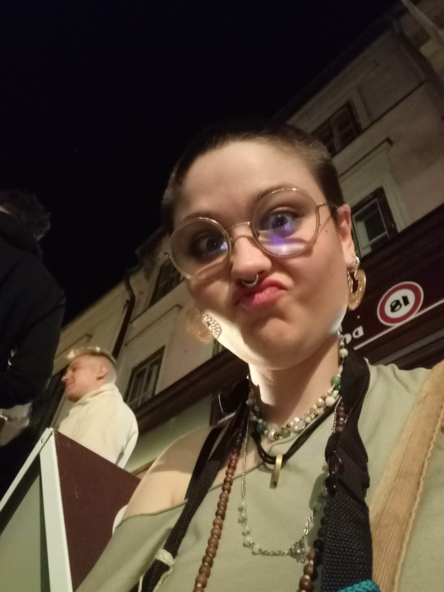

✨Persze majd meg is ölelgetlek meg minden✨
Tudod, nem mindig sikerül úgy bánnom a szavakkal, mint teccene... pedig egyszerű a mondandóm: legyen fantörpikus éved, s ennek koronájául mára fergetegesen fantasztikus napod. Egyszerű a mondandóm, de mértéke nem az. Mert azt nemtom kifejezni. Hát csak hidd el. Ez a "fantörpikus" csillagokat karcoló magasságokat jelent.
Micsoda gyöngyszemeket talál az ember

(Kattints a képre a következőért! 👆)Félelmem, hogy néha azt hiszed, csak szerelmeteskedésből mondok ilyeneket. Tudd, hogy nem. Azon több irányból túlvagyunk. Szimplán akarom, hogy tudd. Mindig.